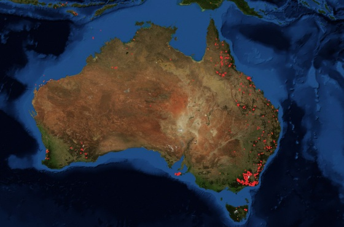

|  | Oceanía es uno de los seis continentes del planeta y el más pequeño de todos. Se ubica al sur del océano Pacífico, al oeste del océano Índico y al sureste del continente asiático. Tiene una extensión aproximada de 8,7 millones de kilómetros cuadrados, lo que representa el 5.9 % del total de la superficie terrestre del planeta. Una particularidad que presenta Oceanía es que el 88 % de su superficie está ocupada por un solo país, Australia. Los 13 países restantes que conforman el continente y los 15 territorios coloniales se distribuyen en el 12 % restante de superficie. Algunos de esos países son extensos, como Nueva Zelanda o Papúa Nueva Guinea, y otros son muy pequeños, como Nauru o Vanuatu, que apenas alcanzan los 20 kilómetros cuadrados de extensión. |
| Características de Oceanía El clima que predomina es cálido y seco. La flora y fauna es muy diversa debido a los ecosistemas tropicales, subtropicales, marinos, de tundra y de alta montaña que favorecen a su desarrollo. Las principales especies endémicas de animales son: los koalas, los canguros, los demonios de Tasmania, los ornitorrincos y los possum de cola de escoba. La mayor parte del territorio es ocupado por Australia, el país más grande del continente. El resto de Oceanía está conformada por miles de pequeñas islas. El idioma más hablado es el inglés. En menor medida, también se hablan tok pisin, hindi y francés. | |